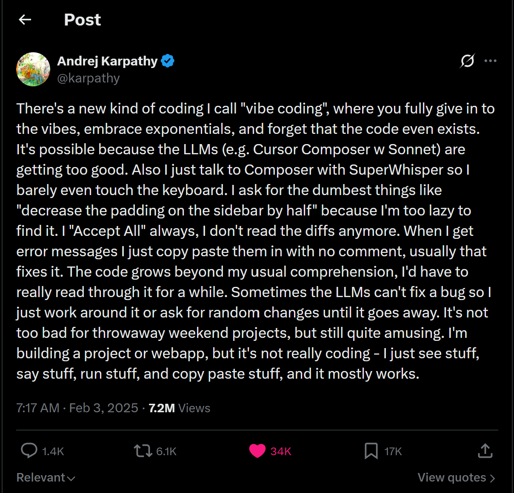

前言
唉，今天澡卡弄丢了，很烦。
大约在 2023 年，也就是所谓的 AI 元年，我就开始接触 AI 编程了。当时和大多数人一样，我觉得它没什么用。事实上，那时的 AI 对编程来说确实帮不上什么忙，只能在 ChatGPT 这类网页聊天框里，你说一句，它回一句，编程能力也比较有限。后来之所以觉得好用，我感觉除了 AI 模型本身越来越强之外，更关键的是出现了 AI 编程代理（AI Coding Agent）这类工具。
说这么多，其实作为一个初级码农，我自己也并不太会用。最近结合实际使用和别人的经验，写下这篇文章记录一下：
Vibe Coding 的概念
一切都要得从 2025 年初说起。那个搞 nanoGPT 的 Andrej Karpathy 发了条推文：
There's a new kind of coding I call ‘vibe coding’, where you fully give in to the vibes, embrace exponentials, and forget that the code even exists.

Andrej Karpathy 原文于是 Vibe Coding 这个概念便诞生了。简而言之， Vibe Coding 就是：你描述意图，AI 写代码，你自己沉浸在 「Vibe」 里，甚至不用去关心代码长啥样。
不过每个人有每个人的用法，为什么有的人就是比某些人用的好了？我之前就一直用不好，于是就到处查方法，发现这与你会不会用 AI 关系不大，跟你走到了哪个阶段关系很大。
在我看来，用 AI 编程这件事，是有三个层层递进的阶段的：
- Prompt Engineering —— 你会提问
- Context Engineering —— 你会喂料
- Agentic Engineering —— 你会协作
下面基于 Codex 进行说明。
阶段一：Prompt Engineering
Prompt Engineering，提示词工程。
它的本质一句话就能说清：你说什么，AI 就干什么。AI 干得好不好，取决于你说的请不清楚，如果你说的模糊不清，它就还你一坨含含糊糊的东西；你把角色、要干啥、要啥格式、有啥限制讲明白，它就给你一份能直接用的代码。说白了就是把话说清楚这点事，没啥玄学。
不过我得先泼盆冷水：这一招放到今天，其实已经有点过时了。早年间(好吧也没多早)人们会对着 ChatGPT、Claude 一句句告诉项目里应该干什么，不该干什么，遇到 xxx 情况怎么干，然后再开始要求生成具体的业务需求。
为什么说这样过时了？这种 AI 网页聊天框或者 CLI 工具都有个治不好的毛病：它每开一轮新对话都是失忆的。你上个对话或者说其它机器上和他说这个项目基于 xxx ，不能干 xxx 等等，他根本就不记得。你总不能每次提问都把这一长串规矩重新抄一遍吧？抄到第三回我自己都嫌烦。
所以 Prompt 这关，学会说很重要，但是他不是终点。真正让 AI 从网页玩具变成生产力的，是下一步：你得想办法，给 AI 喂对、而且让它能记住上下文。也就是你每次新开一个对话，或者换一台设备，他能记住你之前规定的一些内容。
阶段二：Context Engineering
Context Engineering，上下文工程。
核心就一句话：AI 压根不了解你的项目，你得系统性地、一次性地告诉它。
注意，重点不是把代码一股脑全甩给它，那叫信息过载，上下文窗口分分钟给你撑爆。重点是精心地组织信息，让 AI 摸清你项目的全貌：架构长啥样、规范是啥、有哪些约束、现成的写法是怎样的。
一份好的「项目上下文」，我觉得至少得讲清这几件事：
| 要素 | 作用 | 举个栗子 |
|---|---|---|
| 项目架构 | 项目的骨架 | 前后端分离，Spring Boot + Vue 3 |
| 目录结构 | 代码该放哪 | controller/ 放接口，service/ 放业务 |
| 命名规范 | 东西怎么命名 | DTO 用 XxxRequest，VO 用 XxxVO |
| 技术栈约束 | 用啥不用啥 | MyBatis（不是 JPA），JWT（不是 Session） |
| 已有模式 | 照着现成的抄 | 统一 Result |
那么到底应该用什么样的形式告诉它？接着看
用 AGENTS.md 做规范
我们主要使用 AGENTS.md (在 Claude 中叫 CLAUDE.md) 来解决 AI 记不住的问题。可以先阅读 Codex AGENTS.md 进行了解。
一般而言，处理一个新项目时，在项目根目录创建 AGENTS.md，把它当成 AI 的「项目说明书」。妙就妙在——这玩意儿你只用写一次，AI 每开一轮新对话都会自动读一遍。
/init可用于让 AI 根据当前架构，在项目根目录自动创建一个 AGENTS.md 供 Codex 读取。不过生成后建议检查并追加相关信息，以免疏漏。
不过值得注意的时，Codex 启动时所在的工作目录会对 AGENTS.md 的读取有影响。如果如果 Codex 是在 ~/project/mp/ 下打开的，你不能默认期待它在修改 ~/project/real/ 时自动遵守 ~/project/eal/AGENTS.md，除非它显式读取了那个文件，或者当前工作区/上下文机制，或者当前工作区/上下文机制已经把它纳入了。
使用后 AGENTS.md ，妈妈再也不用担心我的 AI Coding Agent 不懂我的规矩了！
用 Plan Mode 做计划
在 Context 中讲清楚规范还不够！还需要强迫 AI 弄清楚我到底想干什么！
Codex 等 AI 编程代理一般支持 Plan Mode，专门用于用户告知 AI 自己想干什么。在 Plan Mode 下，客户列出需求后，AI 不会修改项目，而是先列出打算动哪些文件、分几步走、为啥这么改等内容。如果它不清楚细节，还会主动询问客户细节，客户可以补充 Note 给它。
Codex 中输入
/plan即可进入Plan Mode。
总之在这个模式下 AI 只列计划，搞清楚客户的需求，以及为了完成这个需求它要干什么，不干实际工作。客户觉得可以后，它才会真正的开始工作！
上下文里具体该说些什么？
前面无论是 AGENTS.md 还是 Plan Mode ，都是给 Context 补充必要的信息。
很多人一听上下文就以为是多贴点代码，其实差远了！它还包括文档、代码规范、Git 约定、错误处理方式、安全红线这些软东西。这些单拎出来看好像都不那么重要，但恰恰是它们，决定了 AI 写出来的代码能不能真正长进你的项目里。
我有个特别顺手的类比：这跟给新员工写 onboarding 文档一模一样。你不会傻乎乎地把整个代码库甩他脸上让他自己悟，而是告诉他项目是怎么转的、代码搁哪、规矩是啥。把 AI 当成那个聪明但啥都不知道的新人，你就知道该喂它什么了。
阶段三：Agentic Engineering
Agentic Engineering，代理工程。
目前的最高阶玩法。在这个阶段，AI 不再是那个你问一句、它答一句的对话框了，而是一个能自己规划、自己执行、自己验证的 Agent。
你扔给它一个需求，它会自顾自地把这一整套都走完：
- 分析需求范围
- 制定实施计划
- 吭哧吭哧写代码
- 跑测试
- 自己审查代码质量
- 顺手把文档也生成了
- 最后回过头来跟你汇报结果
是的，只需要你给需求，它能完成剩余的部分，这也是我们使用 AI 的理想状态，尽管大多数时候达不到这个状态。
关于这一块的使用过于复杂，我之后应该会单独出一个博客讲解 (又挖坑了)。
使用 AI 的心智模型
AI 不是万能的，不要默认它知道所有事情
Agent 再能干，它也不知道哪些事绝对不能碰。这些红线，只能人来定。
比如不要 commit 密钥，或者不要随意 rm -rf 等等。
写好 AGENTS.md
它里面该有的东西：
- 项目架构和目录结构
- 技术栈和约束
- 编码规范
- 安全红线
- Agent 的角色分工
- 工作流程
- ……
基本就是把一个真团队的「入职大全」搬过来。如果不写清楚让 Agent 自由发挥，大概率会让人高血压。
有些活，永远是人的
这条我想专门强调，尤其是说给新生听！别一看 AI 这么猛就慌，觉得那我还学个啥。恰恰相反，下面这些事，AI 一样都替不了你：
- 定义需求：Agent 不知道你的业务到底要什么
- 设计架构：它能照着架构干活，但「该用哪种架构」这个决策得你拍板
- 把控质量：最终的代码审查、业务验收，还得人点头
- 划定红线：什么能做什么不能做，永远是人说了算
总结
AI 编程的本质，从来不是让 AI 替你写代码，而是让你能驾驭得了更复杂的项目。
在三个阶段中，你分别扮演者不同的角色，如下：
| 阶段 | 怎么交互 | 你是 | AI 是 |
|---|---|---|---|
| Prompt Engineering | 你写一句，它写一句 | 代码作者 | 代码生成器 |
| Context Engineering | 你给背景，它写代码 | 架构师 | 高级开发 |
| Agentic Engineering | 你给需求，它自己干 | 项目经理 | 一整个开发团队 |
这三个阶段是相辅相成的，不是说处于阶段三，就不用在意阶段一的 Prompt 了！
哪怕你已经用上了 Agent 团队，写好每一个 prompt 依然是你最核心的基本功。因为说到底，你给 Agent 下的那个需求，本身就是一个 prompt——地基塌了，上面盖多高都是空中楼阁。
参考资料
Vibe Coding 技巧：
Codex 使用：